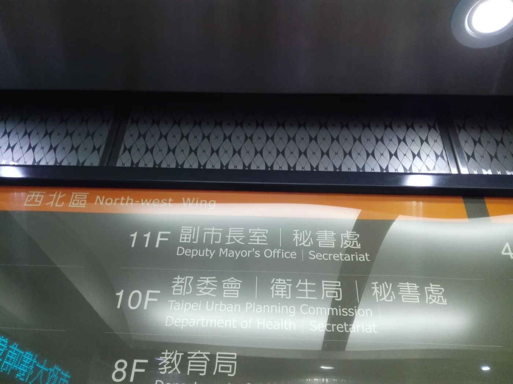

32 Eighty days on the trail
Elections are doable—and costly in dignity.

From nomination on 20 October 2019 to wind-down on 10 January 2020—about 83 days. I had never run for office; with one low-key canvas billboard I took 13,434 votes, third in the district, about 10,000 behind second place.
The aims were clear: get ideas heard; prove competent people can step down and run. Losing does not mean correct information cannot still be carried by others.
Market handshakes, chasing garbage trucks, balloon backpacks—some contacts work; some are populism I think damages professional thresholds. COVID later paused handshakes and an older aesthetic.
The spine was air pollution and energy. As an engineer I opened CEMS and stats before the vote, mocked or not. Air is children’s lungs, not a blue–green prop.
I left the race full of harvest from my first and deliberately last political act. This site is an essay collection, not a campaign relic; the record is for understanding, not a comeback.
Source: Taiwan's Great Future — Switzerland Today, Taiwan Tomorrow — Eugene Chang · 9. Campaign journal · 9.2 Post-election notes